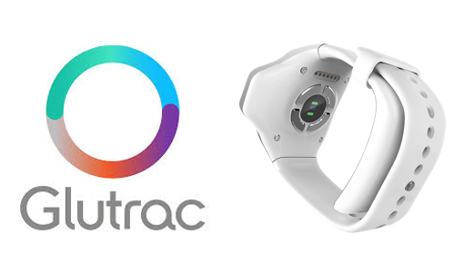
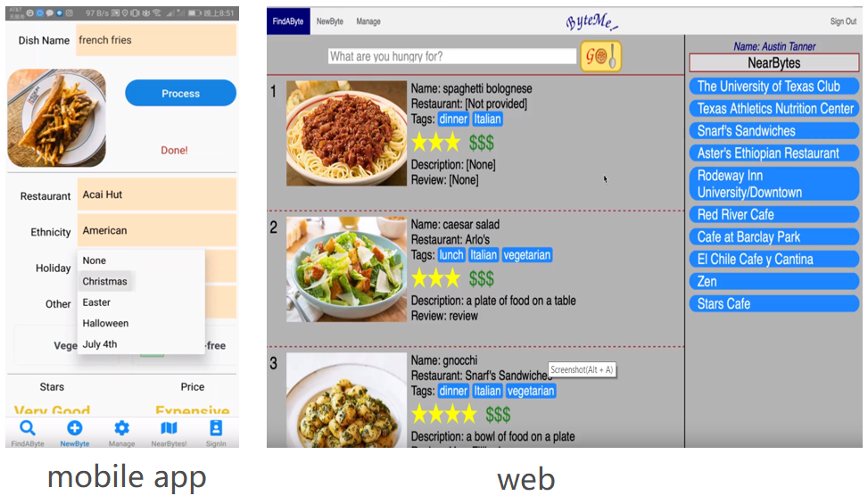
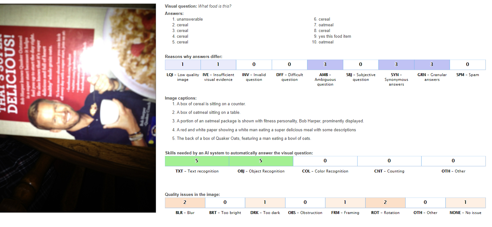
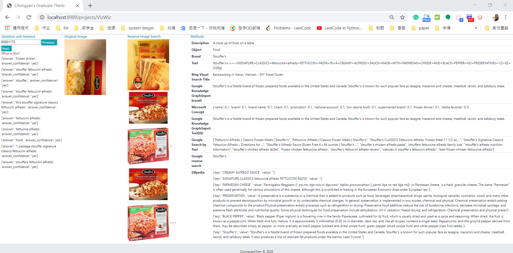
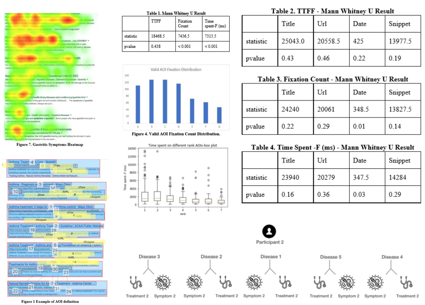
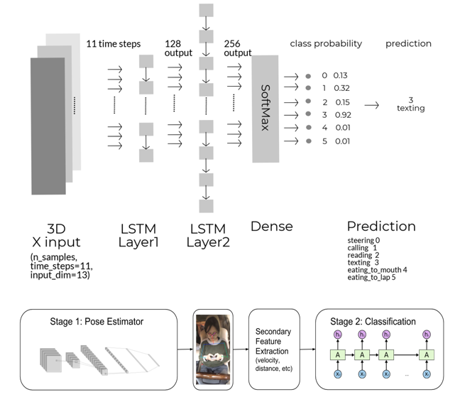
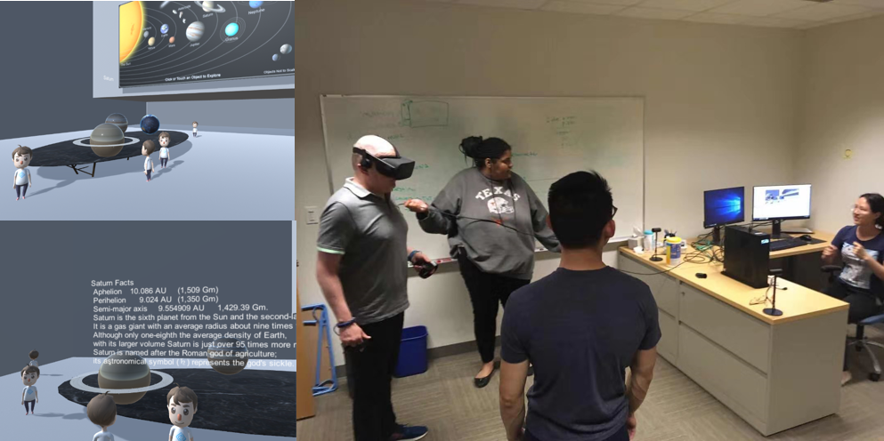
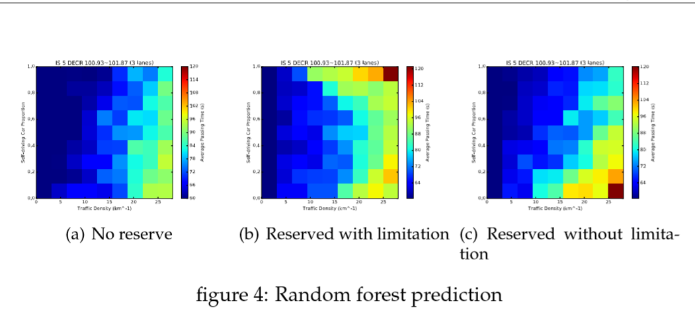

Hi, I'm a master student at UT, majoring in Information Science. My research interest is HCI, Affective Computing (emotion AI) and Mobile Health. I would like
to help people measure, analyze, and improve their long-term mental health. I am skilled in Signal Processing, Data Analysis, Machine Learning, and is learning Deep Learning and Knowledge Graph recently.
Here is a link to my resume.
I am self-disciplined and have great determination. Besides, I am creative, good at thinking outside of the box, and identifying potential solutions. I am always eager to learn and open to new things.
In my leisure time, I like drawing, and playing basketball with my friends.
University of Texas at Austin2020-2024
PhD Information Science
University of Texas at Austin2018-2020
M.Sc. Information Science
Courses:
- INF 385T AI in Health
- INF 385K Projects in HCI
- INF 385T Intro to Machine Learning
- INF 385T Virtual Environments
- EE 382V Activity Sensing/Recognition
- EE 382V Advanced Programming Tools
- EE 360C Algorithms
South China University of Technology2014-2018
B.Eng. Electronic Engineering
Courses:
- Advanced Language Program Design III
- Computer Networks
- Data Structures
- Digital Signal Processing II
- Embedded System and its application
- Signals & Systems
- Software Engineering


"Activity Recognition with Wristband Based on Histogram and Bayesian Classifiers"
Yi-Cong Huang, Wing-Kuen Ling, Chi-Wa Cheng, Chun-Hung Li, Chong-Yan Chen.
IEEE 5th International Conference on Signal and Image Processing (ICSIP), 7/19/2019.
Paper
- Programming Languages
- Python
- Java
- Kotlin
- C
- C++
- Artificial Intelligence
- Deep Learning
- Machine Learning
- scikit-learn
- Keras
- PyTorch
- Tensorflow
- LSTM
- BERT
- CNN
- GAN
- Web + Mobile development
- React Native
- Android development(Java, Kotlin)
- HTML
- CSS
- JavaScript
- PHP
- JQuery
- Ajax
- Backend + Systems
- Linux
- Azure
- Google Cloud
- AWS
- Docker
- Data related
- SQL
- NoSQL (MongoDB)
- Qlik
- Knowledge Graph
- Gephi
- CrowdSourcing
- CrowdSourcing
- Others
- Git
- MATLAB
- Unit Test/Jenkins
- LaTex
- Unity 3D
- Design
- Sketch
- InDesign
- Photoshop
- Human Languages
- Mandarin
- English
- Cantonese
- Recently, I am learning the followings...
- Explainable AI
- Adversarial Attack
- Network Compression
- I plan to learn the followings in 3 months...
- Transfer Learning
- Auto-encoder
- Meta Learning
- Anomaly Detection
- Life-Long Learning
- Reinforcement Learning
Algorithm Engineer (Intern), HUAWEI, Shenzhen, China, 06/2019 – 08/2019
- Conducted URL pattern extraction using Regex, utilized md5 for page update recognition, and applied Naïve Bayes to recognize dead links.
- Detected keywords and compared text-similarity for real title extraction, employed DFS to reconstruct Xpath to extract text content, utilized Hash and Dynamic Programming to extract repeated node to extract web border.
Algorithm Engineer (Intern), Add Care Ltd, Shenzhen, China11/2017 – 3/2019


ByteMe

VizWiz Project
Click here for more details:
- The field of computer vision has made significant advances in visual question answering (VQA) and image captioning. and image captioning Theha sophisticatedve proposed lots of fancy models, in use todaywhich works well on simple simple image captioning and VQA tasks but they perform poorly when the task requiresVQA or image captioning needs common sense or external knowledge. Previous research hasve explored Visual Question Answering (VQA) using awith knowledge base and iImage captioning usingwith reverse image search. However, there is a need for studies thatnone have explored the benefits of multi-source external knowledge for real tasks in these two areas and for real task. Besides, to our knowledge, we are the first research propose using image search by text for these two areas.
This thesis compares three kinds of external knowledge: knowledgebase, reverse image search, and search by text and evaluates them on two image captioning datasets: COCO-captions and VizWiz-captions as well as on three visual question answering datasets: VQA v2, VizWiz-VQA, and OK-VQA. The results show that including external knowledge can largely improve the accuracy of VQA. This research confirms that reverse image search is suitable for the image captioning task and suggests to explore knowledge base for image captioning. It also suggests that knowledge base is more suitable for traditional VQA while search by text is more suitable for VizWiz VQA dataset. Besides, the results show a possibility of answering visual questions using low-quality images or even answering “unanswerable” questions by using external knowledge. Our research provides greater understanding for the VizWiz Challenge and reveals a gap between traditional VQA/Image captioning task and real VQA/Image captioning task from the perspective of external knowledge. 


Activities Recognition in Self-Driving Car
Collected ten peoples’ five activities to solve the take-over problem. Reduced individual differences. Built pose estimator to detect skeleton of people. Extracted secondary features to help classify similar activities. Ensemble them with LSTM. (Paper)
Paper

Virtual Presnetaion
Besides, we designed different human-objects interactions: interacting with slides, poping out details of the display item when user gets close to the item, etc.

2017 Mathematical Contest in Modeling - "Cooperate and navigate"
We predicted traffic condition with varied road density and smart car proportions.
We built Global Decision Model to control smart car proportions and provide optimal route plans for both human drivers and smart cars. Paper